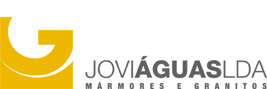
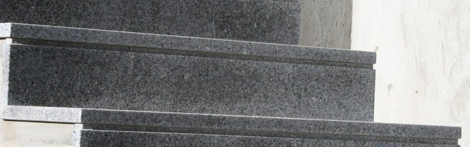
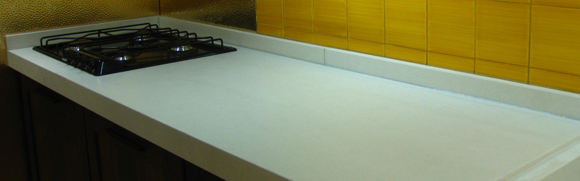
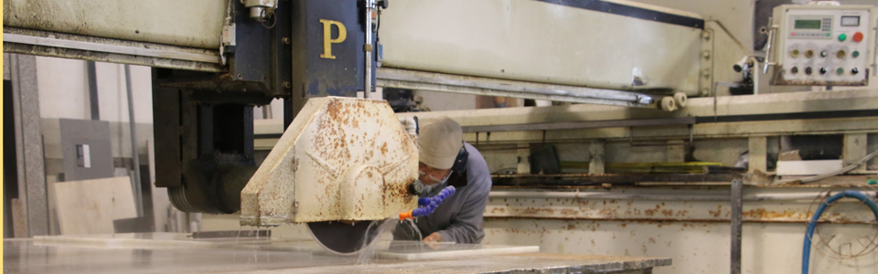

A pedra no interior.
Bancadas, espaços de banho e outros elementos apresentados na galeria de decoração.

Pedra natural
Gondim, Maia
Transformação de pedra natural para construção, decoração e arte fúnebre.
Explorar aplicações
Uma matéria, diferentes contextos
Uma bancada, um revestimento ou uma escada pedem conversas diferentes. Escolha um exemplo para preparar as primeiras perguntas.

O espaço disponível, as medidas e a utilização da bancada ajudam a iniciar a escolha da pedra.
Preparar esta ideiaExemplos publicados pela Joviaguas. A adequação de cada material, acabamento e aplicação precisa de ser confirmada pela empresa.
Bancadas, espaços de banho e outros elementos apresentados na galeria de decoração.
Fachadas, pavimentos e revestimentos em pedra natural fazem parte das aplicações descritas no site.
Uma área também apresentada pela Joviaguas, para conversar diretamente com a equipa.
Contactar a JoviaguasOrganizar antes de perguntar
Escolha o contexto e a informação que já tem. O resumo é apenas uma simulação de como poderia começar o pedido.
Sem dados pessoais. Nenhuma informação é enviada.

Joviaguas · Mármores e Granitos
A Joviaguas apresenta-se como uma empresa de transformação e comércio de pedra natural, instalada na zona industrial de Gondim, na Maia.
Conhecer a empresa no site oficialUma proposta para a Joviaguas · Ricardo Almeida
O site já reúne as áreas de trabalho e galerias de imagens. A proposta é dar mais contexto a esses exemplos e ajudar o visitante a chegar à conversa com uma ideia organizada.
As galerias atuais apresentam vários trabalhos. Nesta demonstração, a aplicação fica junto da fotografia e das primeiras informações a reunir, sem sugerir que a mesma pedra serve para todos os usos.
Aplicação, fase do projeto e necessidade de orientação ficam num resumo. Assim, o visitante pode preparar o que quer perguntar em vez de começar uma mensagem em branco.
Proponho filmar um trabalho real com a equipa, do corte ao acabamento, escolhendo convosco as etapas que faz sentido mostrar. O filme ficaria junto da aplicação correspondente, para ligar o processo à peça que o visitante vê.
Na Canvas, fiz a filmagem, a edição e a integração do filme no website. O filme permite ver o trabalho da oficina e os acabamentos, junto da apresentação da empresa.
Ver o projeto CanvasSou o Ricardo. Produzo filmes e desenvolvo websites. Esta demonstração torna a ideia concreta; os conteúdos finais e o âmbito do trabalho seriam definidos convosco.
Contactos oficiais
Travessa do Solão, n.º 67
4475-241 Gondim, Maia
Contactos reais da empresa. Esta página é uma demonstração e não recebe pedidos de orçamento.